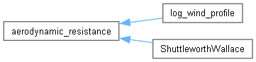
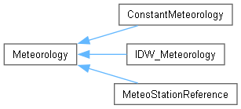
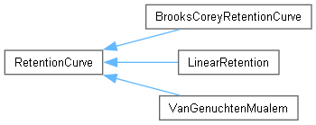

2.0.0b10
catchment modelling framework
Loading...
Searching...
No Matches
Class Hierarchy
Go to the textual class hierarchy



© 2008-2017 by
Philipp Kraft
and
Institute of Landscape Ecology and Resources Management,University of Gießen
Generated: Fri Jan 19 2024 16:10:58